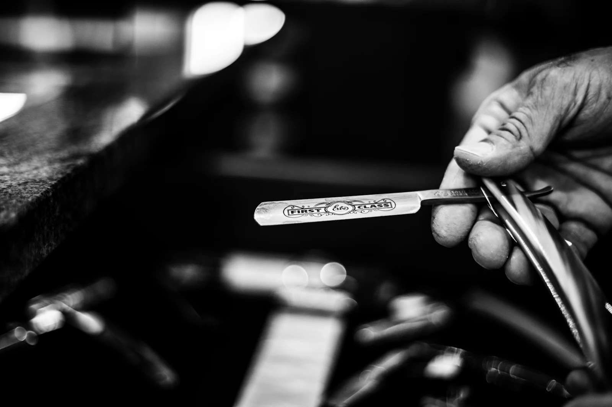
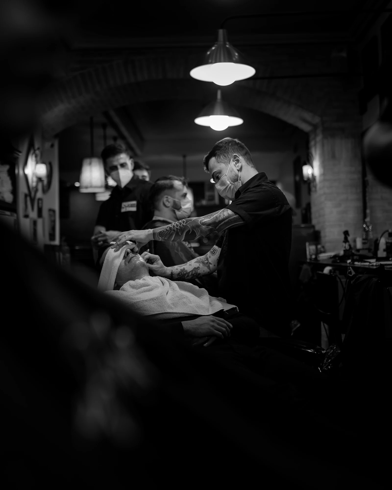
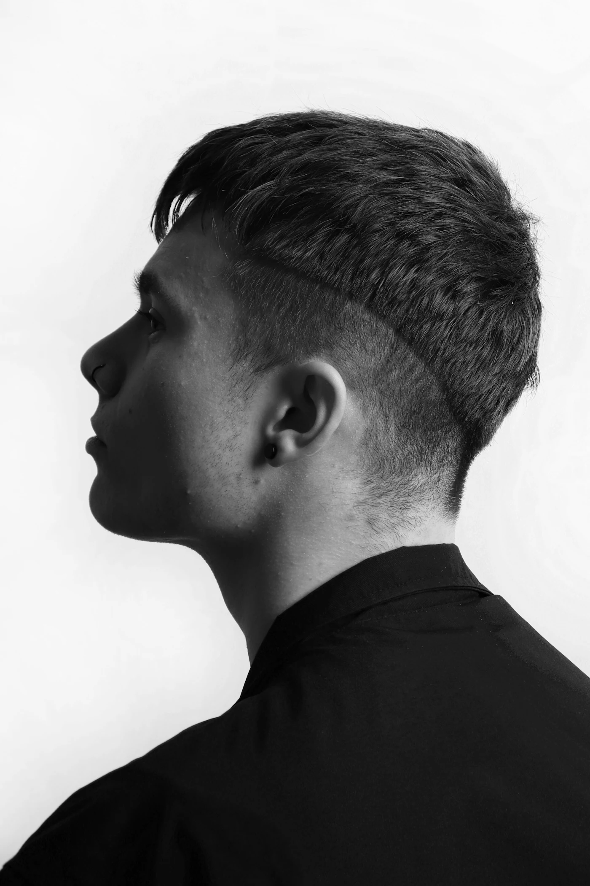
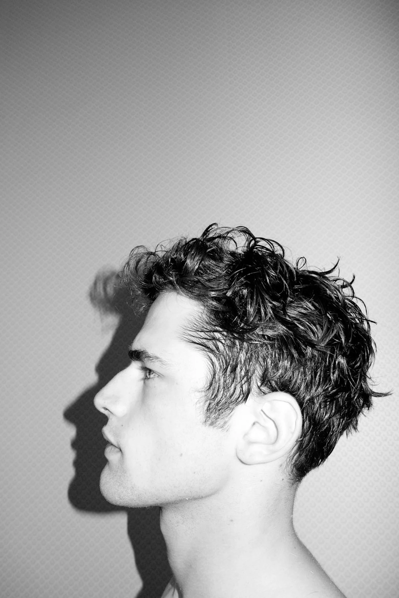
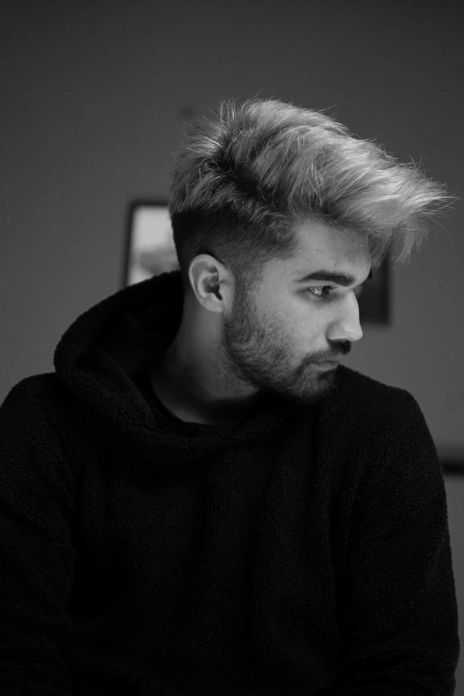
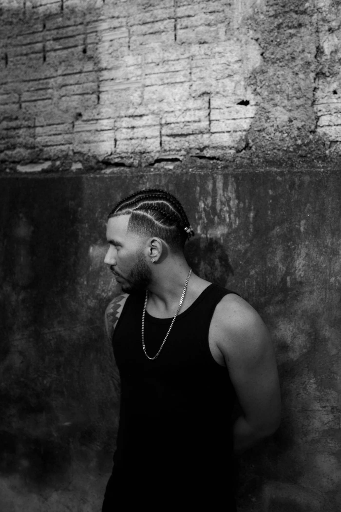

Flash N°01
01 / 04
RISCKH
Four dice that read RISK. Let them roll once more and they read RICH. Every cut is a roll of the dice — he takes it with steady hands.
Forearm · blackwork(01) The barber

Ayhan treats hair the way he treats ink — something you carry with you. Clean geometry, soft transitions, a finish that still looks right three weeks later.
@ayhanabdollahiiiii ↗
(02) Services
Every service starts with a conversation. Durations are a guide — your hair sets the pace.
Consultation, scissor-over-comb and clipper work, wash and finish.
60 minFrom zero to blend — seamless gradients and razor-sharp edges.
45 minShape, line-up and a hot towel to close it out.
30 minHot towels, warm lather, one blade. The old ritual, done right.
40 minLine-ups, parts and freehand razor details.
30 minCut, beard, razor shave and treatment. Clear your afternoon.
90 min(03) Lookbook
Keep scrolling →




More on
Instagram ↗(04) Ink
The marks Ayhan carries — redrawn in the dark. Stencil first, then the needle.
Four dice that read RISK. Let them roll once more and they read RICH. Every cut is a roll of the dice — he takes it with steady hands.
Forearm · blackworkA ladder-back chair in heavy line and fine hatching. For a barber it’s everything — where every story starts and every cut gets made.
Forearm · fine lineTypewritten, then crossed out in red. Not given — earned. One clean line, one honest cut at a time.
Hand · black & red“My life is more than my body — and if I could, I would tattoo it.”
(05) Book the chair
Appointments only. Send a DM with the look you’re after — a photo helps — and Ayhan will reply with the next free slot.